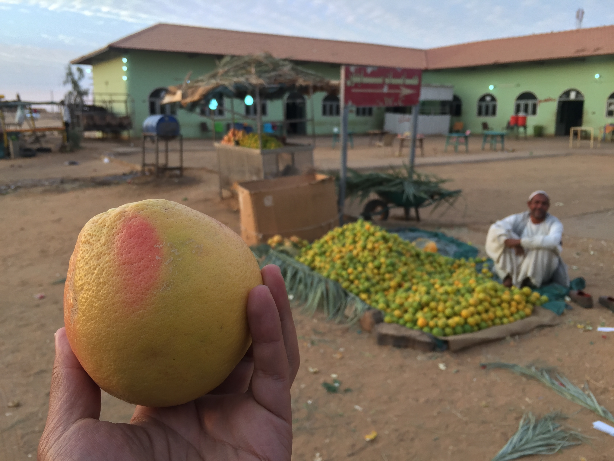

[caption id="attachment_3016" align="alignnone" width="3264"] Orange purchased from road side vendor in the middle of the Sudan desert[/caption]
{kind=link}
Society
- Sharia law is used as the foundational legal framework within the country.
- Public venues for prayer are prevalent
- Majority of males observed to engage in worship 5 times a day
- Touting is non-existent except at tourist venues as well as bus stations. Prices are fixed.
- Hospitality of locals is commendable. On multiple occasions they would pay for tea and food if they happen to engage in any form of conversation out of curiosity.
- Minimal signs of homelessness observed. Streets in Khartoum appear empty past 8pm in the evening.
- Despite general lack of infrastructure, a strong sense of community was observed amongst the population. Daily affairs were was observed to be conducted in an orderly and peaceful manner.
Technology level
- Level of technology level in government agency observed is low.
- Mobile phones are prevalent. Android owns majority of market share. Samsung and Huawei mobile phone users were observed to be prevalent.
- Facebook and WatsApp are the dominant internet communications medium. YouTube is in prevalent use
- Internet connectivity is low and generally unstable hovering around 300++kpbs in hotels.
- The following US based technology solution is not accessible. Use of proxy is necessary.
AWS
- Gmail
- Stripe
- Bugsnag
Perception of foreign relations
- US and western nations perceived still to be harboring colonial masters mentality attempting to meddle in affairs of nation with aim of gaining unfair advantage.
- The Chinese government is perceived as friendly and fair, genuinely interested in helping the country develop.
Nature and history
- Water melon was observed to grow wild in the sub-Saharan dessert. Much agricultural potential could be expected if nile is successfully harvested for irrigation purposes.
- Donkeys, camels and cows observed to roam wild in the sun-Saharan dessert.